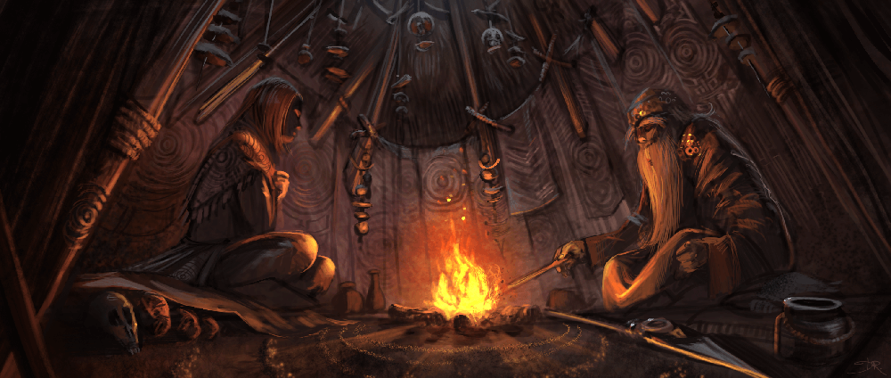

Exploration and Socialization
Exploration and Socialization are the pillars of a TTRPG that are much less rules-oriented and much more oriented around the actual “Role-Play” part of being a Table-Top Role-Playing Game. As described on our Home Page, the Socialization pillar focuses on how non-violent interactions between characters are resolved, and the Exploration pillar focuses on how characters interact with the surrounding game-world.
As discussed in our page on the rule disparity between Combat and these two pillars, it’s common to assume that, because Exploration and Socialization have fewer rules governing them, that they are less important. As we mention in that article, that is not the actual reason for the rules disparity (the actual reasons being subjectivity, and the need for some semblance of balance due to the competitive nature of combat), and the pillars that the players and their Game Master are most interested in are the pillars that should be emphasized the most. Players should work with their Game Master ahead of time to discuss the kind of stories they want to experience as their characters.
As for the pillars themselves and what they entail, they are both very subjective and depend on the creativity of both the players and the Game Master, but most systems give the characters access to certain skills that can be used to improve their chances of success when interacting with certain characters and elements of the game-world.
For example, the Socialization pillar entails the rules around things like the ability to persuade a crime lord into selling you some information, or wow a crowd with a fantastic musical performance, or perhaps trick a guard into thinking you’re not the intruder they’re looking for and he went that way.
Likewise, the Exploration pillar would entail the rules of interacting with the non-character elements of the world, such as the ability to stay on course when trekking through a jungle, or search a room for a secret passage or other clues, or perhaps you’re trying to craft something with some tools, spare materials, wit, and luck.